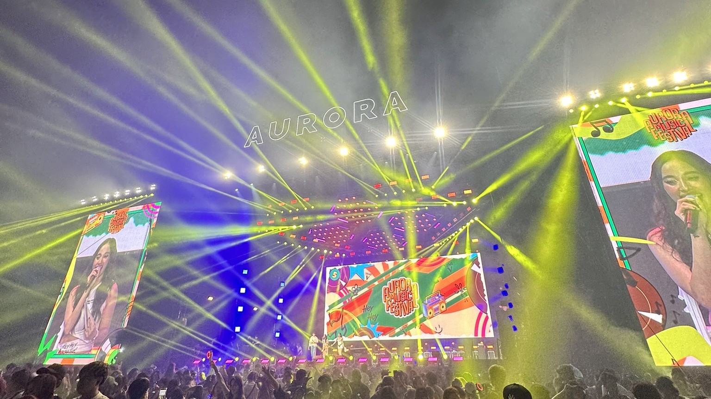

PRODUCTION DIRECTOR
ITSC Media Group
14
Deployed Projects
7
Blog Entries
3
Certifications
1
Unified Portfolio

LATEST HYBRID PROJECT
Aurora Fest 2026:
Aurora Fest 2026:
Day 2
12+ hours of extreme standing duration, navigating massive crowds, and battling dynamic stage lighting to capture the raw energy of live OPM.
EXPLORE GALLERY →Featured Portals
Select a category below to dive into my technical systems or creative productions.

It is all just telemetry.
Whether routing networks or clipping an F1 apex, I focus that split-second precision through the camera lens.